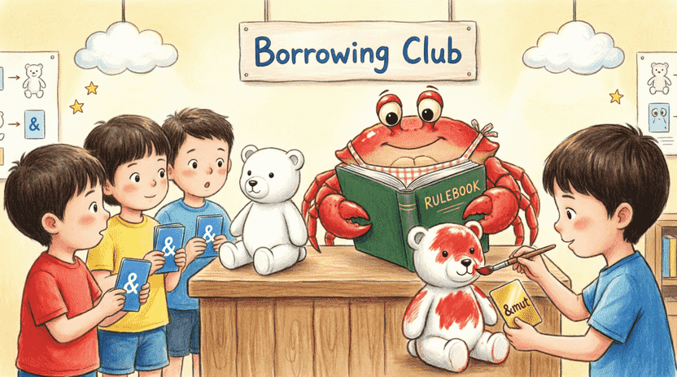
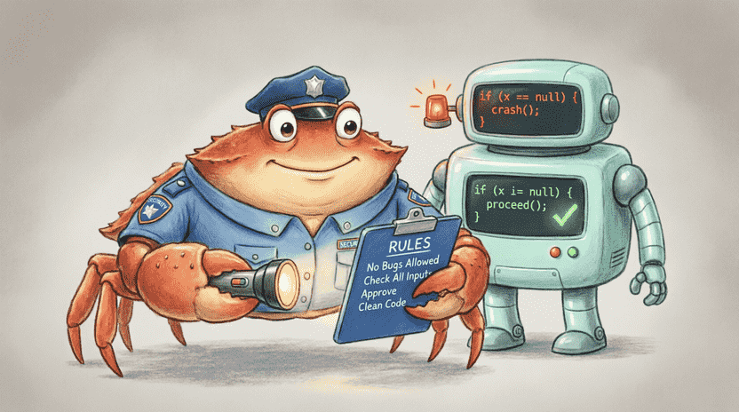
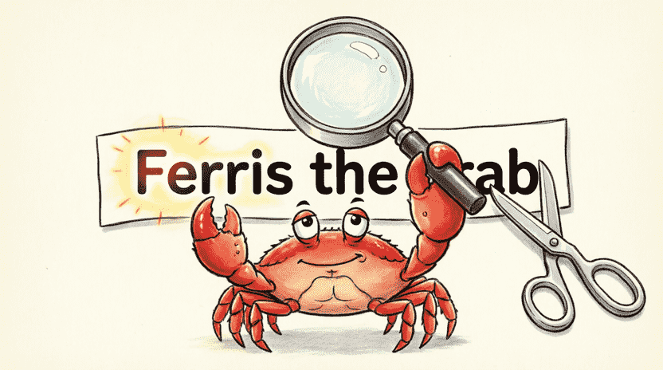
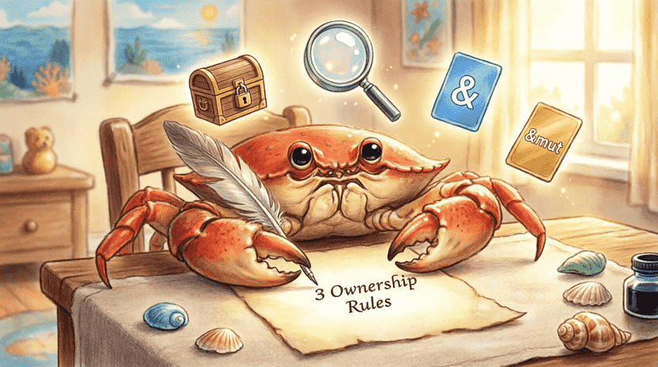

🦀 The Land of Rust: Ferris the Crab’s Space Adventures
Chapter 4: Ferris’s Borrowing Club (Learning Ownership with Toys)
📋 Chapter Outline:
4.1. The Fight Over the Red Tractor (The Move Concept)
4.1.1. The Story: The Tractor with Only One Owner
Ferris has a beautiful red toy tractor. 🚜💨 One day, his friend Bill visits and says: “What a cool tractor! Can I play with it?” Ferris, being a kind crab, says: “Sure, take it! It’s yours now!” and hands it over.
Later, when Ferris misses his tractor and wants to play with it again, he suddenly remembers he doesn’t have it anymore! Because he gave it away.
In Rust, this exact thing happens, and we call it Ownership Transfer (Move).
4.1.2. Rule #1: Every Value Has Exactly One Owner
In Rust, everything you create (a text, a list, a number, or a toy) has only one owner. We call that owner the Owner. As long as you own it, you can use it. But when the owner leaves the room (for example, when a function finishes or reaches a closing brace {}), the toy automatically gets cleaned up from the computer’s memory. This keeps the memory tidy and prevents it from filling up with digital junk! 🧹✨
4.1.3. Moving Ownership in Code
Let’s see this happen in Rust code:
fn main() {
let s1 = String::from("tractor"); // s1 is the owner
let s2 = s1; // Ownership moved from s1 to s2
// println!("{}", s1); // ❌ If you uncomment this, you'll get an error!
println!("{}", s2); // ✅ This works perfectly
}The compiler quickly says: value moved. It means: “Hey friend, this doesn’t belong to you anymore! Ownership went to s2.”
4.1.4. Why Do Some Things Just Copy? (The Copy Trait)
You might ask: “But I used to swap numbers like that before, and I didn’t get any errors!”
You guessed exactly right. Some things, like simple numbers (i32, f64) or single characters (char), are so tiny and lightweight that Rust just makes a copy instead of moving ownership:
#![allow(unused)]
fn main() {
let x = 5;
let y = x; // x is copied here, not moved
println!("x = {}, y = {}", x, y); // Both work fine!
}Why? Because copying a number is like remembering a fact in your head: instant and free! But a String can be huge (like a thousand-page book). Copying it would waste time and memory. So Rust prefers to just move the ownership. We call types that copy automatically Copy types.
![[Illustration: Two labeled boxes side-by-side. Box “s1” is empty with a faded cross mark. Box “s2” holds a shiny red toy tractor. A curved arrow shows ownership moving from s1 to s2. Ferris stands beside them, pointing at the boxes with a surprised but happy expression. Style: bright children’s book illustration, clean lines, educational metaphor, 16:9 aspect ratio.]](assets/images/4.1.png)
4.2. Borrowing Cards (Borrowing & References)
4.2.1. Solving the Fight: A Borrowing Card Instead of Giving Away the Toy
Ferris shouldn’t have given the tractor away permanently. He could have just handed Bill a borrowing card. With that card, Bill can look at the tractor, or even ride it, but the tractor stays in Ferris’s storage.
In Rust, we call this borrowing card a Reference. The act of lending is called Borrowing.
4.2.2. Creating a Reference with &
You create a borrowing card by putting an & symbol before a variable’s name:
#![allow(unused)]
fn main() {
let s1 = String::from("tractor");
let s2 = &s1; // s2 holds a reference to s1
println!("Owner: {}", s1); // Ferris still has his tractor
println!("Borrower: {}", s2); // Bill can also look at it
}No error occurs here! Both can use the value because they’re just “looking at it,” not “taking ownership.”
4.2.3. Rule: Unlimited Normal Borrowing Cards Allowed
You can issue as many normal borrowing cards (&) as you want:
#![allow(unused)]
fn main() {
let s = String::from("hello");
let r1 = &s;
let r2 = &s;
let r3 = &s;
println!("{} {} {}", r1, r2, r3); // Everyone can look!
}This is just like several kids gathering around a fish tank to watch the fish. As long as nobody puts their hand in the water to change things, everyone is happy! 🐠
4.2.4. Special Borrowing Card for Changes (&mut)
But what if Bill wants to paint the tractor red (modify it)? A normal card isn’t enough anymore. He needs a special golden borrowing card labeled &mut. But it comes with a strict rule:
- ⚠️ At any given moment, only one person can hold this special card.
#![allow(unused)]
fn main() {
let mut s = String::from("tractor"); // The original must be mutable too
let r1 = &mut s; // Bill gets the golden card
r1.push_str(" red"); // Paints the tractor (adds text to the string)
println!("{}", r1);
}If two people try to grab the golden card at the same time, the guard shouts:
#![allow(unused)]
fn main() {
let mut s = String::from("tractor");
let r1 = &mut s;
let r2 = &mut s; // ❌ Error! Two mutable references at once are forbidden
}4.2.5. Ferris’s Golden Rule (Borrowing Rules Summary)
This is the most important rule of the Borrowing Club. Write it down somewhere visible:
- 🔹 You can have many normal cards (
&) for looking only. - 🔹 You can have exactly one special card (
&mut) for looking + changing. - ❌ Mixing them is absolutely forbidden!
Example of breaking the rule:
#![allow(unused)]
fn main() {
let mut s = String::from("tractor");
let r1 = &s; // Normal card (look only)
let r2 = &mut s; // ❌ Error! You can't look and change at the same time
}
4.3. The Club Guard: Borrow Checker
4.3.1. Meet the Guard
Living inside the Rust compiler is a cute but serious creature called the Borrow Checker. He’s exactly like a strict but kind club guard. His job is to check all the rules we just learned. If he sees someone breaking a rule, he stops the program and tells you exactly what went wrong with friendly, colorful messages.
He’s our friend because he prevents our program from crashing, losing data, or having two people change the same thing at once! 🛡️
4.3.2. Expiration Date of Borrowing Cards (A Peek into the Future)
Every borrowing card has an expiration date. This means the card is only valid as long as the original toy exists. If the toy gets thrown away (removed from memory), the borrowing card becomes useless and dangerous. The compiler checks these expiration dates automatically.
This example causes an error because the borrowing card (r) tries to live longer than the toy (s):
#![allow(unused)]
fn main() {
let r;
{
let s = String::from("hello");
r = &s; // Borrowing card created
} // s is destroyed here (closing brace)
println!("{}", r); // ❌ Error! r points to a destroyed variable
}(Don’t worry about the details yet. You’ll learn more about this in later chapters. Just know that the guard carefully watches the expiration dates of all cards.)
4.3.3. Exercise: Intentionally Break the Rules (and See Friendly Errors)
Now it’s your turn! Write some code that intentionally breaks the golden rule. For example:
fn main() {
let mut text = String::from("game");
let a = &text;
let b = &text;
let c = &mut text; // The guard shouts here!
println!("{} {} {}", a, b, c);
}Run it and read the compiler’s error message carefully. See how precisely it tells you: “cannot borrow text as mutable because it is also borrowed as immutable.” That means the guard is protecting you! 🤝

4.4. Puzzle Pieces (Slices)
4.4.1. Sometimes We Only Need Part of a Text
Imagine Ferris has a sign that says: Welcome to Crab Planet. He only wants to highlight the word Crab. Should he copy the whole sign? No! He can just grab a magnifying glass and point to that exact section. In Rust, we call this magnifying glass a Slice.
4.4.2. Creating a Slice with Ranges
To make a slice of text, we use the [start..end] syntax:
#![allow(unused)]
fn main() {
let s = String::from("Ferris the crab");
let ferris = &s[0..6]; // "Ferris" (indices 0 to 5)
let the_crab = &s[7..]; // "the crab" (index 7 to the end)
let all = &s[..]; // "Ferris the crab" (the whole text)
}📌 Important Note for Non-English Text: In Rust, [..] indices work on bytes, not characters. Since characters like Persian letters or emojis take multiple bytes, slicing them might cause errors. For now, practice with English text to keep things simple!
4.4.3. Important: Slices Are Also Borrowing Cards
A slice is actually a type of reference (&str). So the guard’s rules apply to it too! As long as you hold a slice of a text, you cannot modify the original text:
#![allow(unused)]
fn main() {
let mut s = String::from("hello world");
let word = &s[0..5]; // Borrowing card pointing to "hello"
s.clear(); // ❌ Error! Can't clear the text while word is still looking at it
}4.4.4. Exercise: Find the First Word
Write a function called first_word that takes a &str (a text reference) and returns the first word (everything before the first space). If there’s no space, return the whole text.
💡 Hint: You can use the .find(' ') method, which returns the position of the space. This method returns an Option: if it finds a space, it gives Some(position); if not, it gives None. (This is exactly like the Result from Chapter 2, but uses Some/None instead of Ok/Err.)
fn first_word(s: &str) -> &str {
match s.find(' ') {
Some(pos) => &s[..pos], // Space found: slice up to that position
None => s, // No space: return the whole text
}
}
fn main() {
let sentence = String::from("Ferris the crab");
let word = first_word(&sentence);
println!("First word: {}", word); // Output: Ferris
}This code is safe, fast, and exactly what a professional Rustacean would write! 🛠️

4.5. Summary & Challenge
4.5.1. The Three Main Rules of Ownership
To keep things clear, write these three rules on a piece of paper and stick it where you can see it:
- Every value in Rust has exactly one owner.
- You can have many immutable references (
&) OR exactly one mutable reference (&mut). Mixing them is forbidden. - When the owner leaves the scope, the value is automatically cleaned up.
4.5.2. Challenge: A Function That Doesn’t Take Ownership
Write a function called calculate_length that takes a &String reference and returns its length (without taking ownership). In main, create a String, calculate its length with your function, and then print the original String again afterward.
💡 Sample Answer:
fn calculate_length(s: &String) -> usize {
s.len() // .len() returns the string's length
}
fn main() {
let my_string = String::from("Ferris the crab");
let len = calculate_length(&my_string);
println!("The length of '{}' is {} characters.", my_string, len);
// my_string is still alive because we never gave away its ownership!
}4.5.3. Final Words: Don’t Worry, Just Practice!
This chapter might have felt a bit hard or strange at first. That’s completely normal! Ownership is Rust’s most famous and challenging concept. Even experienced programmers sometimes wrestle with the Borrow Checker.
But the good news is: the more you code, the more naturally these rules will click into place. It’s like riding a bicycle; it feels tricky at first, but soon you won’t even have to think about balancing. 🚴♂️💨
In the next chapter, we’ll explore a super fun tool: Structs, which are like “ID cards for space monsters”! 🦑✨
